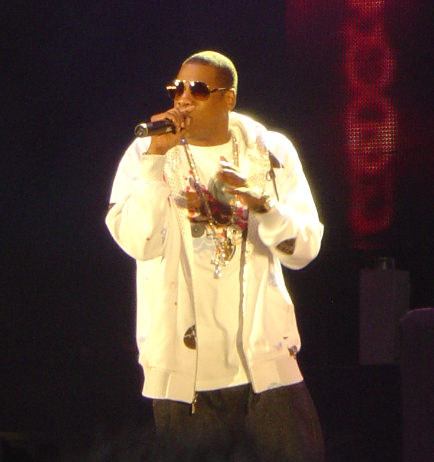
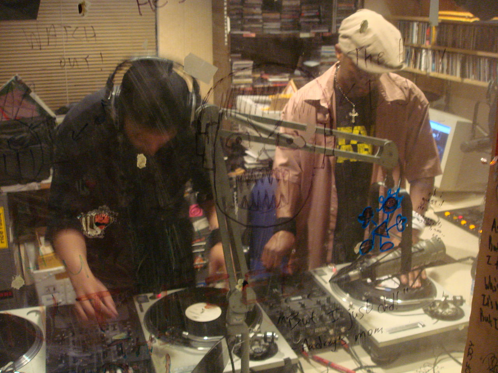

Hip hop (numit și hip-hop, hiphop sau prin generalizare rap) atât un gen muzical cât și o mișcare culturală ce s-a dezvoltat în comunitățile urbane începând cu anii 1970.De când a apărut în New York în anii 1970, hip-hop-ul a ajuns să înglobeze un întreg stil de viață care încorporează diverse elemente de etnie, tehnologie, artă și cultură urbană.

Genurile preferate de muzică erau de obicei break-uri din cântece funk care de obicei aveau elemente de percuție. Rapping-ul s-a dezvoltat datorită faptului că MC-ii vorbeau în timpul muzicii pentru a-și promova DJ-ul, alte petreceri, sau despre alți MC. Această tehnică a luat amploare și s-a dezvoltat în rapping-ul care apare pe primele single-uri hip-hop

La începutul și până la mijlocul anilor '80,nu era stabilită o industrie propriu-zisă a muzicii hip-hop cum există în secolul 21,cu case de discuri,producători de discuri,manageri și artiști și angajați de Repertoar.Politicienii și oamenii de afaceri au disprețiuit și ignorat mișcarea muzicii hip-hop.Majoritatea artiștilor hip-hop au cântat în comunitățile locale și au înregistrat în scene underground.Totuși,la sfârșitul anilor '80,mai marii industriei muzicale au realizat că puteau face profit din succesul "gangsta rap-ului".Au făcut o formulă ce a creat "un bufet intrigant de hipermasculinitate și violență glorificată."Acest tip de rap a fost orientat spre noii fani ai genului:bărbații albi.Ei ignorau modul în care era expusă realitatea dură pentru a se concentra pe sexul și violența ce erau implicate.